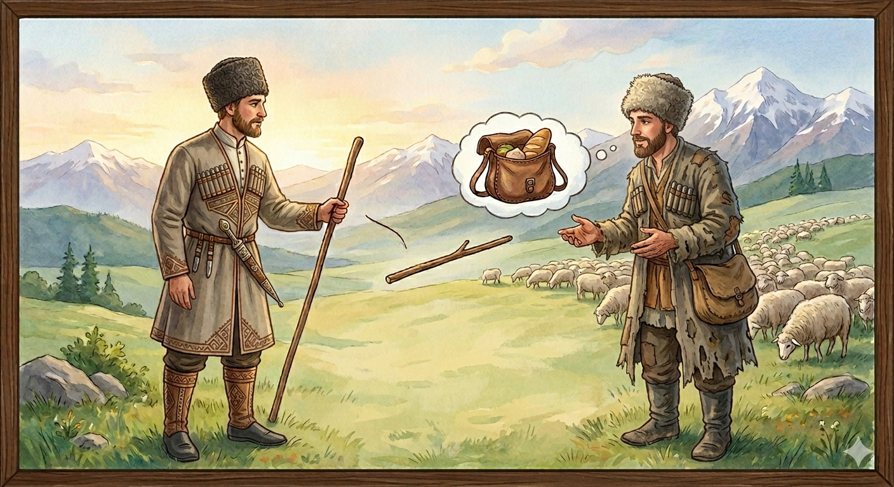

И.А. Дахкильгов. Хьехаме дувцарш - поучительные рассказы-притчи.
И.А. Дахкильгов. Хьехаме дувцарш - поучительные рассказы-притчи. Из ингушского фольклора.

ЖаӀуно аьннар
Цхьа саг цӀаьхха вӀаьхий хиннав. ТӀехье йоацаш дӀаваьннача даь-веший дукха жа кхаьча хиннад цунна. Ӏу оттаве везаш хиннад гӀулакх. Укхунга цхьаннега иззал жа лелалургдолаш хиннадац. Ӏу оттваьв цо. Жа а ийца, Ӏуйранна из Ӏу дӀаводаш, цунна гӀадж мара кхы хӀама кховдаяь хиннаяц жена дас. ТӀаккха Ӏуно аьннад цунга: - Хьанехк, хьо жа леладе Ӏемавацар, аьнна, со наьха жега валла Ӏема ва хьона. Ӏа фу дий, сона тӀормиг а хьаба, цу чу даахӀама а долла, сога жа доажадейта хьо воалле.
РУССКИЙ
Пастух сказал
Некоему горцу от дяди досталась в наследство большая отара овец… Наследник сам не справился бы с нею и потому нанял пастуха. Когда утром пастух выгонял отару на пастбище, хозяин дал ему всего-навсего один посох. Тогда пастух сказал ему: "Как видно, ты никогда не нанимал пастуха, а я же давно занимаюсь своим ремеслом. Ты мне не палку давай, а дай суму и в нее положи еду, если хочешь, чтобы я пас твоих овец".
ENGLISH
The shepherd said
A certain highlander inherited a large flock of sheep from his uncle… The heir could not manage it on his own, so he hired a shepherd. When the shepherd was driving the flock out to pasture one morning, the owner gave him nothing more than a single staff. The shepherd then said to him: 'It's clear you've never hired a shepherd before, but I've been practising my trade for a long time. Don't give me a stick; give me a bag and put some food in it if you want me to tend your sheep.'
НОХЧИЙН
ПОГОВОРКИ
Гота йодаш, сиргӀалго “баь тӀа ловза йода со” яхад, готара йоагӀаш, яьхад “жожагӀатара йоагӀа со”. Впервые вели бычка на пахоту, и он говорил: “Иду резвиться на лугах”; возвращаясь же, сказал: “Иду из ада!”.Дала дезача денна сом толашагӀа да дала ца дезача деннача тумал. Потраченный по делу рубль лучше, чем сотня, потраченная не по делу.Дикача цӀеннанна Ӏатто шура дукхагӀа лу. Хорошей хозяйке корова молока больше дает.ЖӀалена а дукхагӀа веза шийна деш доттар. Даже собака больше любит того, кто ей похлебку наливает.Къамаьл кӀезигагӀа, болх дукхгагӀа. Меньше разговоров, больше дел.КӀайча кулгашта наьха къахьегам беза. Белые руки чужой труд любят.“Массарел тешамегӀа жӀали мара дац”, - яхад жаӀуно. “Самое верное существо – собака”, утверждал пастух.Топ-туро ца даьр сискало даьд. Чего не достигли силою (саблею и ружьем), того достигли хлебом-солью.Хабарца е саг а визавац, е гӀала а еттаяц. Пустой болтовней ни человека не накормишь, ни башню не построишь.Хи йисте вагӀарах чкъаьра хургбац, кхайна йисте вагӀарах ялат а хургдац. От сидения у реки рыба не появится, от сидения возле поля урожая не будет.Хозал – даьтта дац, - маькха тӀахьокхалургьяц. Красота – не масло, на хлеб не намажешь.ХӀама тоаденнача даьна жа-Ӏуй ийшаб. Разбогатевшему хозяину батраков не хватает.“Хьо-м везацар сона, хьа кисилг (кепилг) дезар”, - яхад цхьанне. “Да не тебя я люблю, а твой кармашек (твою денежку)”, - шутя говорил некто.